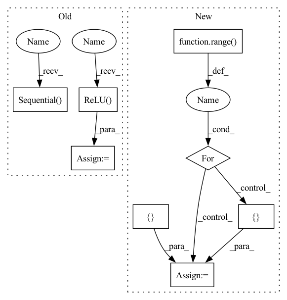

Pattern ID :38470
Before Change
super().__init__()
hdim = hidden_dim
self.encoder = nn.Sequential(
nn.Conv2d(3, hdim, 4, stride = 2, padding = 1),
nn.ReLU() ,
nn.Conv2d(hdim, hdim, 4, stride = 2, padding = 1),
nn.ReLU(),
nn.Conv2d(hdim, hdim, 4, stride = 2, padding = 1),
nn.ReLU(),
nn.Conv2d(hdim, num_tokens, 1)
)
self.decoder = nn.Sequential(
nn.ConvTranspose2d(dim, hdim, 4, stride = 2, padding = 1),
nn.ReLU(),
nn.ConvTranspose2d(hdim, hdim, 4, stride = 2, padding = 1),
nn.ReLU(),
nn.ConvTranspose2d(hdim, hdim, 4, stride = 2, padding = 1),
nn.ReLU(),
nn.Conv2d(hdim, 3, 1)
)
self.num_tokens = num_tokens
self.codebook = nn.Embedding(num_tokens, dim)
After Change
assert num_layers >= 1
encoder_layers = []
decoder_layers = []
for i in range( num_layers):
enc_in = 3 if i == 0 else hdim
dec_in = dim if i == 0 else hdim
encoder_layers += [
nn.Conv2d(enc_in, hdim, 4, stride = 2, padding = 1),
nn.ReLU(),
]
dec_in = dim if i == 0 else hdim
decoder_layers += [
nn.ConvTranspose2d(dec_in, hdim, 4, stride = 2, padding = 1),
nn.ReLU()In pattern: SUPERPATTERN
Frequency: 3
Non-data size: 8
Instances Fragment ID: 110023036
Project Name: lucidrains/dalle-pytorch
Commit Name: 95a980129346b66ce7cbb3f984b698ca21e0965c
Time: 2021-01-06
Author: nauman.mustafa.x@gmail.com
File Name: dalle_pytorch/dalle_pytorch.py
M Class Name: DiscreteVAE
N Class Name: DiscreteVAE
M Method Name: __init__(5)
N Method Name: __init__(4)
M Parent Class: nn.Module
N Parent Class: nn.Module
M File Name: dalle_pytorch/dalle_pytorch.py
N File Name: dalle_pytorch/dalle_pytorch.py
M Start Line: 82
M End Line: 102
N Start Line: 80
N End Line: 107
Before Change
super(Generator, self).__init__()
self.conv1 = nn.Sequential( nn.ReflectionPad2d(1), nn.Conv2d(in_channels, num_init_features, 3), nn.ReLU())
basic_block_layer = []
for _ in range(n_basic_block):
basic_block_layer += [ResidualInResidualDenseBlock(num_init_features, growth_rate)]
self.basic_block = nn.Sequential(*basic_block_layer)
self.conv2 = nn.Sequential(nn.ReflectionPad2d(1), nn.Conv2d(num_init_features, num_init_features, 3), nn.ReLU())
self.upsample = upsample_block(in_channels=num_init_features, scale_factor=scale_factor)
self.conv3 = nn.Sequential(nn.ReflectionPad2d(1), nn.Conv2d(num_init_features, num_init_features, 3), nn.ReLU())
self.conv4 = nn.Sequential(nn.ReflectionPad2d(1), nn.Conv2d(num_init_features, out_channels, 3), nn.ReLU() )
def forward(self, inputs):
conv1 = self.conv1(inputs)After Change
self.conv1 = nn.Conv2d(3, 64, kernel_size=3, stride=1, padding=0, bias=False)
// 23 ResidualInResidualDenseBlock layer
rrdb_layers = []
for _ in range( 23):
rrdb_layers += [ ResidualInResidualDenseBlock(64, 32) Fragment ID: 110023037
Project Name: lornatang/esrgan-pytorch
Commit Name: 8ef58f0f8458d618a99fffa07433927c9b9ef70f
Time: 2020-10-12
Author: liuchangyu1111@gmail.com
File Name: esrgan_pytorch/model.py
M Class Name: Generator
N Class Name: Generator
M Method Name: __init__(2)
N Method Name: __init__(7)
M Parent Class: nn.Module
N Parent Class: nn.Module
M File Name: esrgan_pytorch/model.py
N File Name: esrgan_pytorch/model.py
M Start Line: 99
M End Line: 125
N Start Line: 181
N End Line: 210
Before Change
super().__init__()
hdim = hidden_dim
self.encoder = nn.Sequential(
nn.Conv2d(3, hdim, 4, stride = 2, padding = 1),
nn.ReLU() ,
nn.Conv2d(hdim, hdim, 4, stride = 2, padding = 1),
nn.ReLU(),
nn.Conv2d(hdim, hdim, 4, stride = 2, padding = 1),
nn.ReLU(),
nn.Conv2d(hdim, num_tokens, 1)
)
self.decoder = nn.Sequential(
nn.ConvTranspose2d(dim, hdim, 4, stride = 2, padding = 1),
nn.ReLU(),
nn.ConvTranspose2d(hdim, hdim, 4, stride = 2, padding = 1),
nn.ReLU(),
nn.ConvTranspose2d(hdim, hdim, 4, stride = 2, padding = 1),
nn.ReLU(),
nn.Conv2d(hdim, 3, 1)
)
self.num_tokens = num_tokens
self.codebook = nn.Embedding(num_tokens, dim)
After Change
assert num_layers >= 1
encoder_layers = []
decoder_layers = []
for i in range( num_layers):
enc_in = 3 if i == 0 else hdim
dec_in = dim if i == 0 else hdim
encoder_layers += [
nn.Conv2d(enc_in, hdim, 4, stride = 2, padding = 1),
nn.ReLU() Fragment ID: 110023034
Project Name: lucidrains/dalle-pytorch
Commit Name: 95a980129346b66ce7cbb3f984b698ca21e0965c
Time: 2021-01-06
Author: nauman.mustafa.x@gmail.com
File Name: dalle_pytorch/dalle_pytorch.py
M Class Name: DiscreteVAE
N Class Name: DiscreteVAE
M Method Name: __init__(5)
N Method Name: __init__(4)
M Parent Class: nn.Module
N Parent Class: nn.Module
M File Name: dalle_pytorch/dalle_pytorch.py
N File Name: dalle_pytorch/dalle_pytorch.py
M Start Line: 82
M End Line: 102
N Start Line: 80
N End Line: 107
Before Change
down_layers = [nn.ReflectionPad2d(3),
nn.Conv2d(in_channels, 64, kernel_size=7, stride=1, padding=0, bias=False),
nn.InstanceNorm2d(64),
nn.ReLU(inplace=True) ]
// Downsampling
down_layers += [nn.ReflectionPad2d(1),
nn.Conv2d(64, 128, 3, stride=2, padding=0, bias=False),
nn.InstanceNorm2d(128),
nn.ReLU(inplace=True),
nn.ReflectionPad2d(1),
nn.Conv2d(128, 256, 3, stride=2, padding=0, bias=False),
nn.InstanceNorm2d(256),
nn.ReLU(inplace=True)]
// Down sampling residual blocks
for _ in range( 4):
down_layers += [ ResNetBlock(256)nn.Sequential( nn.Linear(64 * 64 * 256, 256, bias=False),
nn.ReLU(True),
nn.Linear(256, 256, bias=False),
nn.ReLU(True))
self.gamma = nn.Linear(256, 256, bias=False)
self.beta = nn.Linear(256, 256, bias=False)
// Up sampling residual blocksAfter Change
// Gamma, Beta block
if self.light:
fc = [ nn.Linear(256, 256, bias=False),
nn.ReLU(inplace=True),
nn.Linear(256, 256, bias=False),
nn.ReLU(inplace=True) Fragment ID: 110023035
Project Name: lornatang/ugatit-pytorch
Commit Name: 29402d1cfc1f9bbb66eed660fd84b48adcbdc188
Time: 2020-05-19
Author: liuchangyu1111@gmail.com
File Name: ugatit_pytorch/model.py
M Class Name: Generator
N Class Name: Generator
M Method Name: __init__(3)
N Method Name: __init__(3)
M Parent Class: nn.Module
N Parent Class: nn.Module
M File Name: ugatit_pytorch/model.py
N File Name: ugatit_pytorch/model.py
M Start Line: 25
M End Line: 54
N Start Line: 100
N End Line: 142